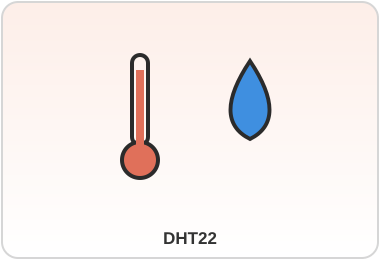

DHT22
Categoria: Temperatura e Umidade DigitalConceito
Versão aprimorada do DHT11, com maior precisão e faixa de medição mais ampla, também conhecido pelo nome de chip AM2302.
Princípio de Funcionamento
Mesmo princípio do DHT11 (termistor + sensor capacitivo de umidade + conversão digital em um fio), porém com componentes de maior qualidade, resultando em leituras mais estáveis e precisas.
| Especificação | Valor |
|---|---|
| Faixa de temperatura | -40°C a 80°C (±0,5°C) |
| Faixa de umidade | 0% a 100% UR (±2-5%) |
| Alimentação | 3V a 6V |
| Taxa de amostragem | 1 leitura a cada 2 segundos |
Aplicações IoT/Industriais
Estufas agrícolas, câmaras frias, sistemas HVAC, monitoramento ambiental em estações IoT profissionais.
Exemplo de Uso
Em uma estufa conectada via ESP32, o DHT22 monitora temperatura e umidade e envia os dados via Wi-Fi/MQTT para um painel de controle em nuvem.
Fabricantes / Modelos
Aosong Electronics (chip AM2302); módulos comercializados por Adafruit, DFRobot e diversas marcas de eletrônica embarcada.